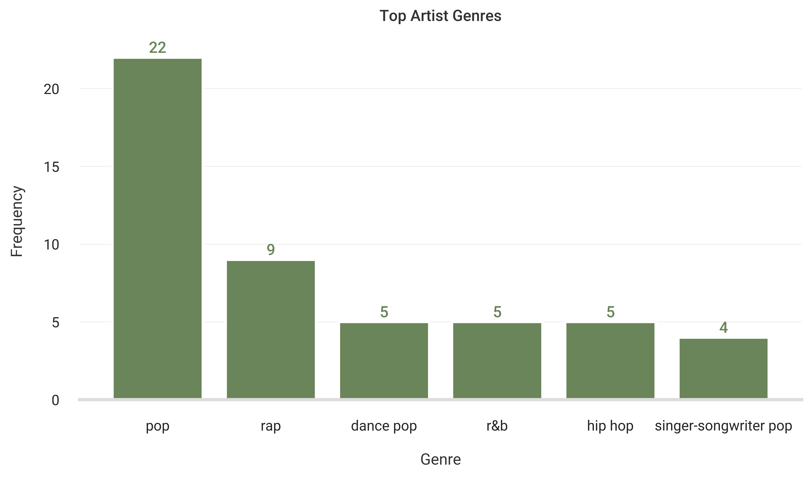
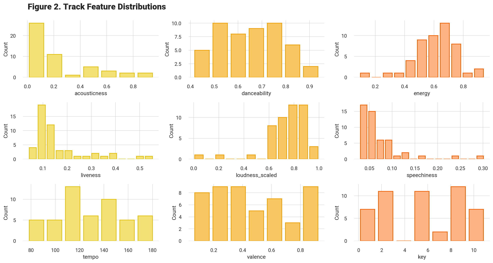
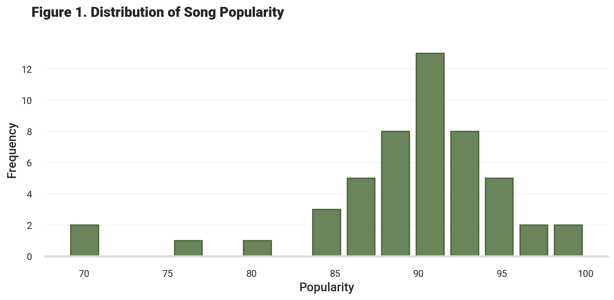
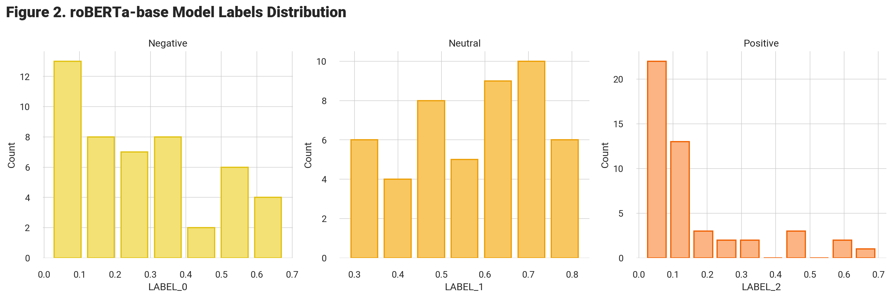
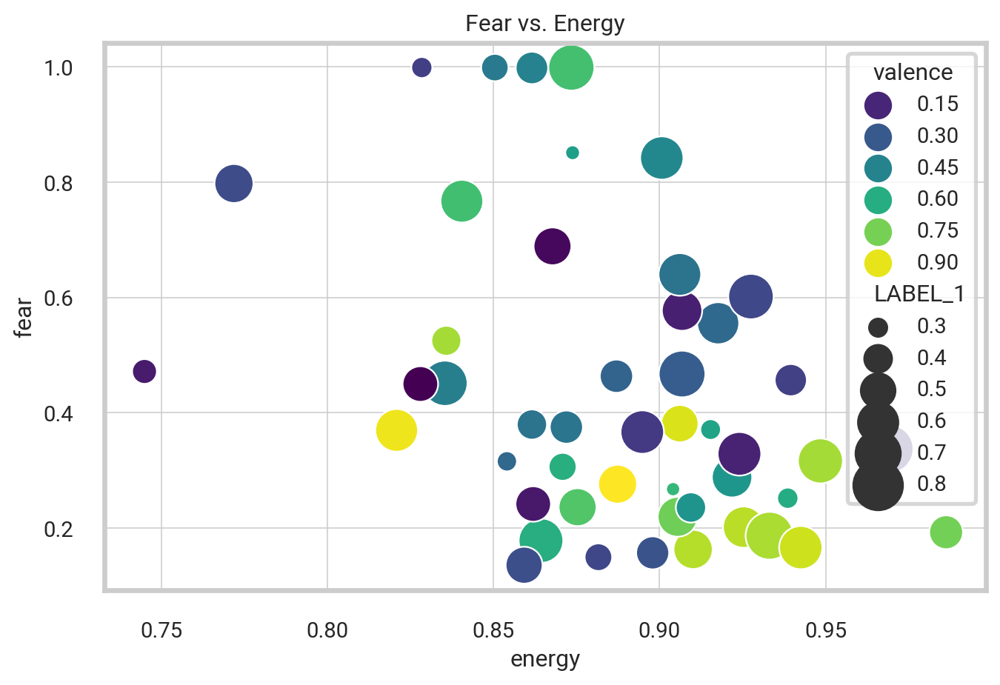

| name | artist | popularity | artist_pop | artist_genres | acousticness | danceability | energy | instrumentalness | liveness | loudness | speechiness | tempo | valence | key | time_signature | length | release_date | |
|---|---|---|---|---|---|---|---|---|---|---|---|---|---|---|---|---|---|---|
| 0 | Beautiful Things | Benson Boone | 100 | 86 | ['singer-songwriter pop'] | 0.151000 | 0.472 | 0.471 | 0.000000 | 0.1400 | -5.692 | 0.0603 | 105.029 | 0.219 | 10 | 3 | 180304 | 2024-01-18 |
| 1 | OKLOSER | Doja Cat | 69 | 87 | ['dance pop', 'pop'] | 0.025500 | 0.898 | 0.674 | 0.000000 | 0.0835 | -8.373 | 0.3030 | 152.046 | 0.883 | 1 | 4 | 169066 | 2024-04-05 |
| 2 | i like the way you kiss me | Artemas | 95 | 81 | [] | 0.000938 | 0.599 | 0.946 | 0.010600 | 0.0826 | -4.263 | 0.0447 | 151.647 | 0.747 | 11 | 4 | 142514 | 2024-03-19 |
| 3 | Too Sweet | Hozier | 88 | 86 | ['irish singer-songwriter', 'modern rock', 'pov: indie'] | 0.029500 | 0.741 | 0.620 | 0.000809 | 0.0398 | -5.505 | 0.0412 | 117.038 | 0.934 | 10 | 4 | 251424 | 2024-03-22 |
EDA
Putting it all together, the get_playlist_tracks function retrieves basic details for each song in a specified Spotify playlist using its URI. The playlist_features function then iterates through these tracks using their IDs to extract additional information, such as danceability, energy, loudness, speechiness, acousticness, instrumentalness, liveness, valence, tempo, and more. From there, we create a Pandas dataframe by passing in the extracted information.
Visualizing the Data
Our next step involves visually representing the distribution of different track features, such as song popularity. To achieve this, we use the powerful matplotlib and seaborn libraries.
Top Artist Genres
The following code generates a dictionary that contains the frequency of artist genres, which is then converted into a dataframe sorted by tallying the number of occurrences of each genre The resulting dataframe exhibits the genres and the number of times they occur.
genres_dict = {}
for x in all_tracks.artist_genres:
# Converting string to list
res = x.replace("'", "").strip('][').split(', ')
for genre_i in res:
if genre_i == "":
break
if genre_i in genres_dict:
genres_dict[genre_i] += 1
else:
genres_dict[genre_i] = 1
# Convert Dictionary to Dataframe
df_genres = pd.DataFrame(genres_dict.items(), columns=['Genre', 'Freq']).sort_values('Freq', ascending=False)
df_genres = df_genres.reset_index(drop = True)
Artist Features
Next, we visualize data for each artist from the playlist track data.
# Count distinct values in column
tallyArtists = all_tracks.value_counts(["artist", "artist_id"]).reset_index(name='counts')
topArtist = tallyArtists['artist_id'][1]
tallyArtistPop = all_tracks.value_counts(["artist_pop"]).reset_index(name='counts')
tallyPop = all_tracks.value_counts(["popularity"]).reset_index(name='counts')
tallyPop = tallyPop[tallyPop['popularity'] > 0]
Track Features
fig, axs = plt.subplots(3, 3, figsize=(15, 8))
fig.suptitle("Figure 2. Track Feature Distributions", weight="heavy", y=0.99, x=0.2).set_fontsize("18")
sns.histplot(data=all_tracks, x=all_tracks[all_tracks["acousticness"].notnull()]["acousticness"], color="#F3E176", alpha=1.0, ax=axs[0,0], edgecolor="#E1C214", linewidth=1.5, shrink=.8)
sns.histplot(data=all_tracks, x=all_tracks[all_tracks["danceability"].notnull()]["danceability"], color="#F9C762", alpha=1.0, ax=axs[0,1], edgecolor="#ECA009", linewidth=1.5, shrink=.8)
sns.histplot(data=all_tracks, x=all_tracks[all_tracks["energy"].notnull()]["energy"], color="#FCB484", alpha=1.0, ax=axs[0,2], edgecolor="#EF6306", linewidth=1.5, shrink=.8)
sns.histplot(data=all_tracks, x=all_tracks[all_tracks["liveness"].notnull()]["liveness"], color="#F3E176", alpha=1.0, ax=axs[1,0], edgecolor="#E1C214", linewidth=1.5, shrink=.8)
sns.histplot(data=all_tracks, x=all_tracks[all_tracks["loudness_scaled"].notnull()]["loudness_scaled"], color="#F9C762", alpha=1.0, ax=axs[1,1], edgecolor="#ECA009", linewidth=1.5, shrink=.8)
sns.histplot(data=all_tracks, x=all_tracks[all_tracks["speechiness"].notnull()]["speechiness"], color="#FCB484", alpha=1.0, ax=axs[1,2], edgecolor="#EF6306", linewidth=1.5, shrink=.8)
sns.histplot(data=all_tracks, x=all_tracks[all_tracks["tempo"].notnull()]["tempo"], color="#F3E176", alpha=1.0, ax=axs[2,0], edgecolor="#E1C214", linewidth=1.5, shrink=.8)
sns.histplot(data=all_tracks, x=all_tracks[all_tracks["valence"].notnull()]["valence"], color="#F9C762", alpha=1.0, ax=axs[2,1], edgecolor="#ECA009", linewidth=1.5, shrink=.8)
sns.histplot(data=all_tracks, x=all_tracks[all_tracks["key"].notnull()]["key"], color="#FCB484", alpha=1.0, ax=axs[2,2], edgecolor="#EF6306", linewidth=1.5, shrink=.8)
#axs[2].set_title("Positive")
sns.despine(left=True, bottom=True)
plt.tight_layout()
plt.savefig("../assets/images/features_dist.png", format="png", dpi=1200)
plt.show()

Twitter-roBERTa-base for Sentiment Analysis
Now, we present a graphical representation of the results obtained from the roBERTa-base model “trained on roughly 58 million tweets and fine-tuned for sentiment analysis using the TweetEval benchmark” (EMNLP 2020). According to the TweetEval reference paper and official Github repository, the resulting labels 0, 1, and 2 correspond to Negative, Neutral, and Positive, respectively.
- Labels: 0 -> Negative; 1 -> Neutral; 2 -> Positive

This code above creates a histogram that displays the distribution of labels for a roBERTa-base model. The labels are categorized as negative, neutral, or positive, with each having its own distinct color. Additionally, the code adds a title to the figure and resizes the subplots to ensure a better fit. The final output is a graph that can be saved in png format for future reference.
Correlations Matrix
After completing the initial data analysis, we proceed with generating the Pearson correlations matrix using the Pandas command df.corr(). Subsequently, we visualize the matrix using the seaborn heatmap, providing a detailed understanding of the relationships between the various variables in our dataset.
track_sentiment_df = df_final[['name', 'artist',
'acousticness', 'danceability', 'energy', 'instrumentalness',
'loudness', 'speechiness', 'tempo', 'valence',
'sadness', 'joy', 'love', 'anger', 'fear', 'surprise',
'LABEL_0', 'LABEL_1', 'LABEL_2', 'NEGATIVE', 'POSITIVE']]
# Find the pearson correlations matrix
corr = track_sentiment_df.corr(method = 'pearson')
The code below produces a scatterplot that showcases the correlation between energy and fear. The x-axis represents the energy value, while the y-axis represents the fear sentiment. The size of each data point corresponds to the label indicating the neutral sentiment level, and its color represents the valence value. Moreover, each bubble contains its energy value within, allowing for a straightforward interpretation of the data.

Similarly, the scatterplot presented above utilizes the track sentiment data, comparing the energy and fear levels of the tracks based on valence and size.